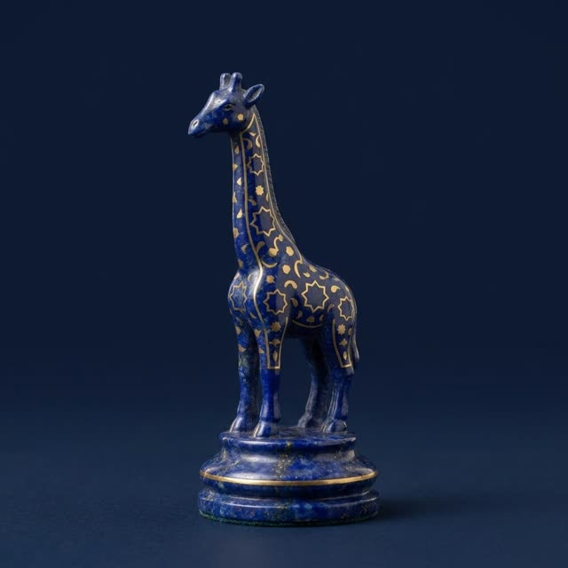

Donalar nomi va nega «Zurafa»
Shoh, farzin, vazir, zurafa, tali’a, faras, rux, pil, jamal, dabboba: eski nomlar nimani anglatadi.

Katta shaxmat donalari bizgacha arab va fors nomlari bilan yetib kelgan. Shoh — qirol. Farzin (fers) — maslahatchi; bizda u general va diagonal bo‘yicha bir katak yuradi. Vazir — to‘g‘ri chiziq bo‘ylab bir katak. Faras — ot. Rux — rux (ladya). Pil (fil) — fil.
Yevropalik uchun yangi donalar: zurafa — jirafa, jamal yoki shutur — tuya, tali’a — «oldindagi, razvedkachi», bizda qorovul, va dabboba — «qamal mashinasi», bizda qamal minorasi. Har bir donaning o‘z piyodasi bor: jirafa piyodasi jirafaga, tuya piyodasi tuyaga aylanadi.
Nega o‘yin «Zurafa» deb ataladi
Zurafa — arabcha «jirafa» so‘zi. Jirafa katta shaxmatning eng g‘aroyib donasi va boshqa hech bir shaxmatda yo‘q. Shuning uchun o‘yinni uning nomi bilan atadik, belgimizga esa ayvon ravog‘i ostidagi jirafani qo‘ydik.
Qo‘lyozmalarda nomlar turlicha yozilgan va tadqiqotchilar ularni ba’zan har xil o‘qiydi. Biz tarixiy shaxmat turlari bo‘yicha zamonaviy ma’lumotnomalarda qabul qilingan o‘qishlarga amal qilamiz.